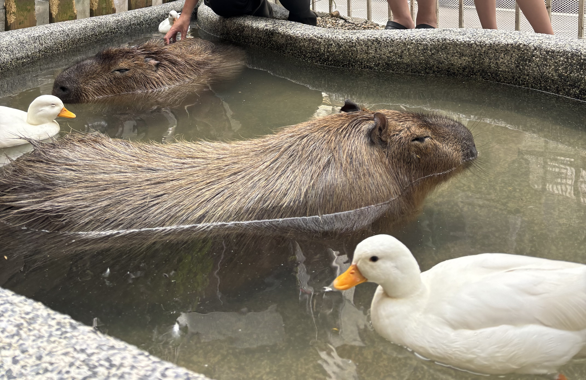
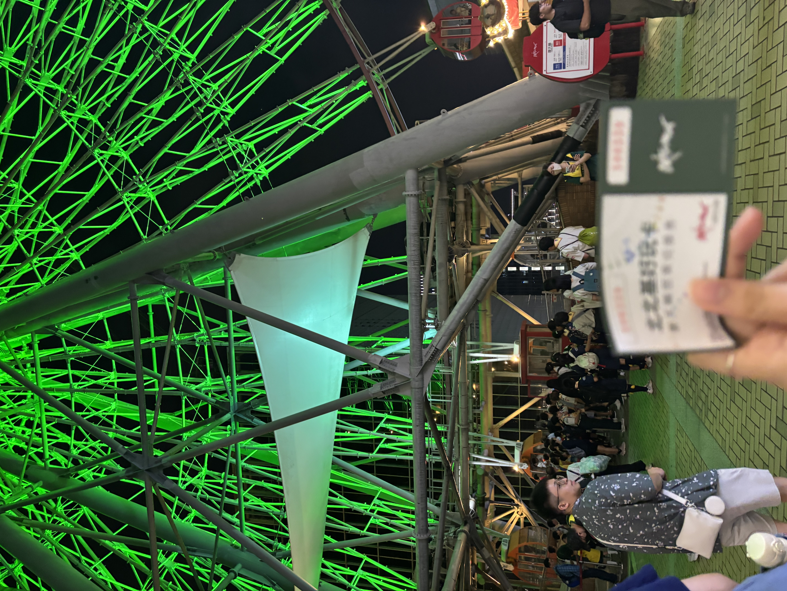
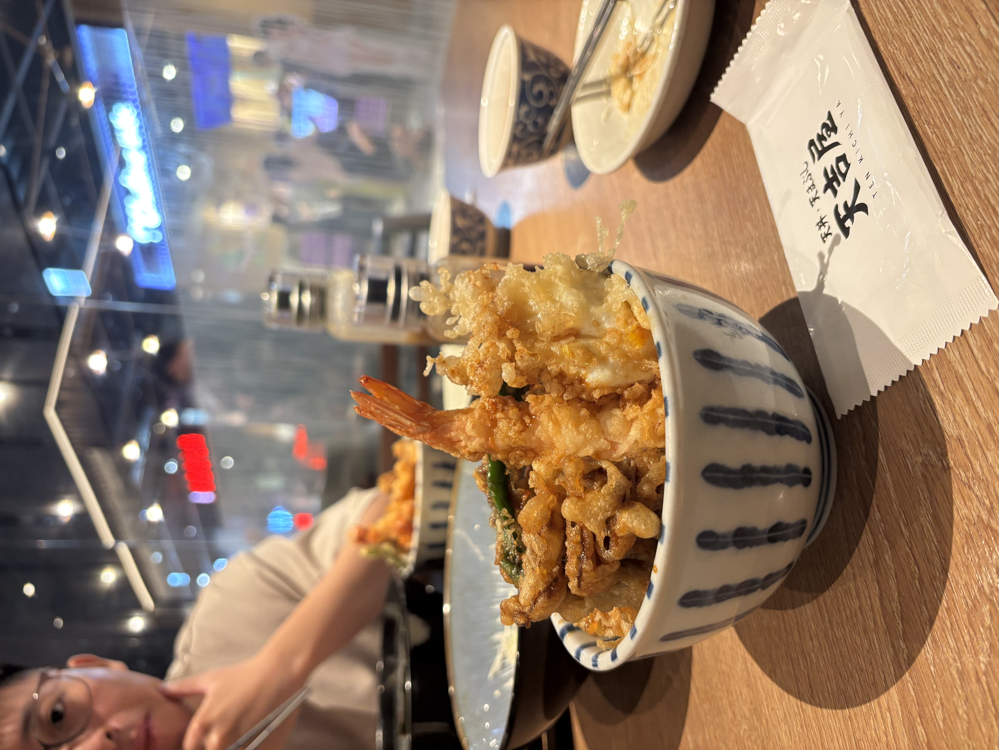
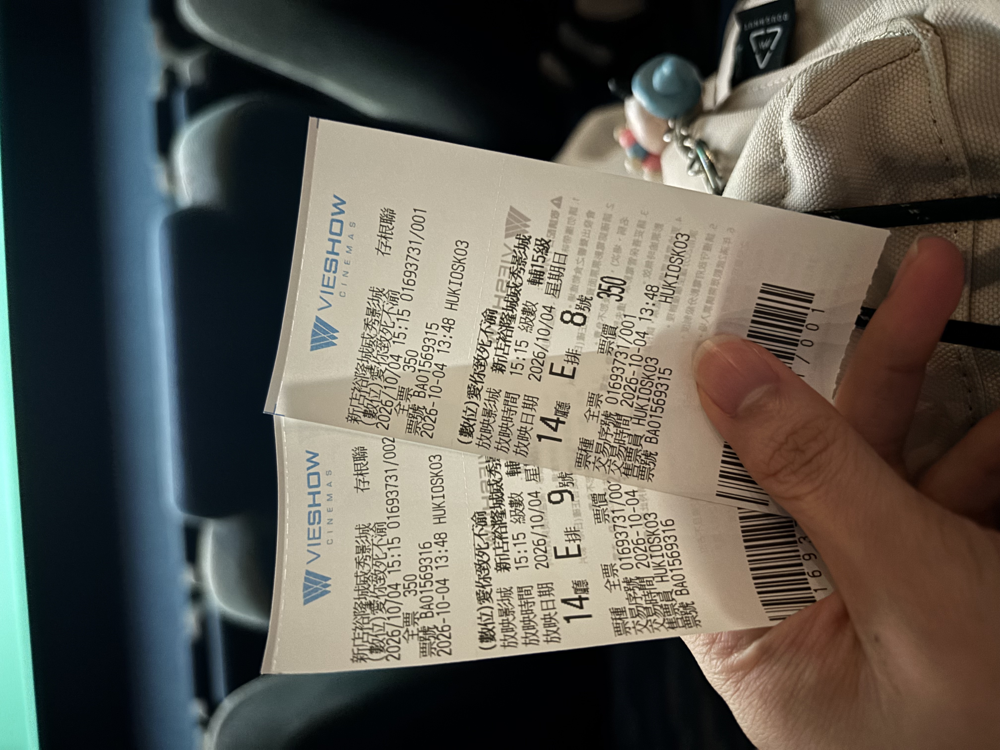
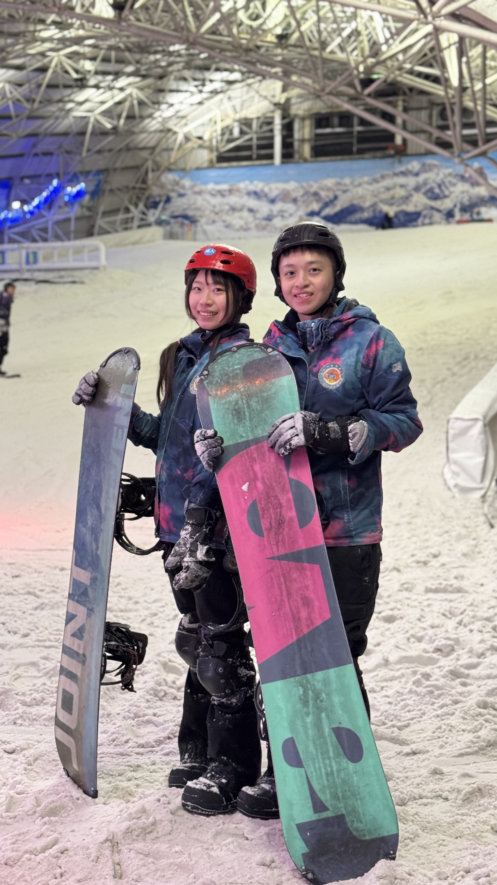
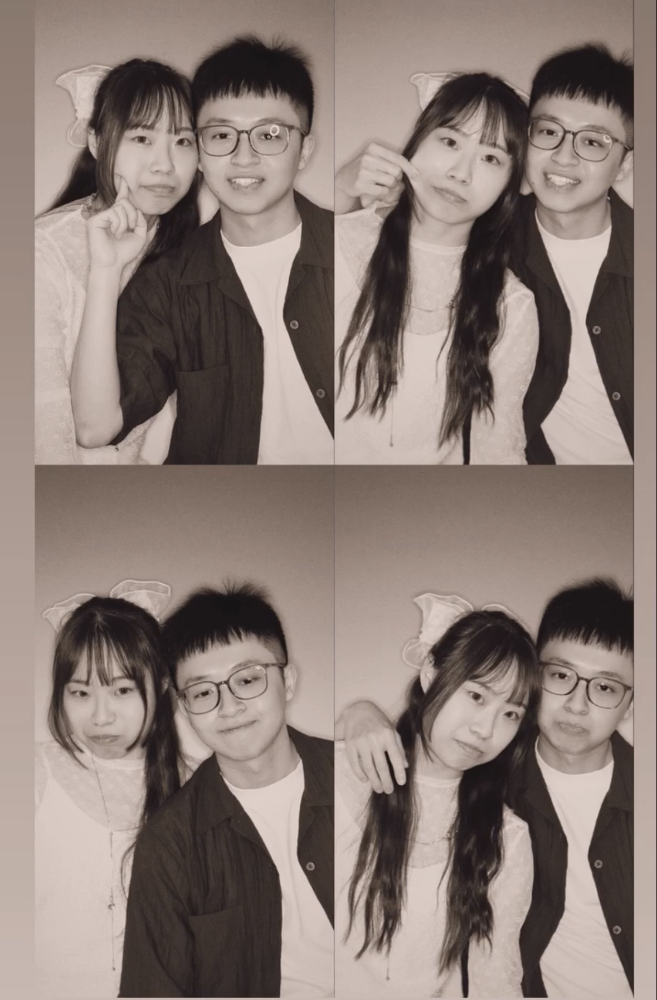
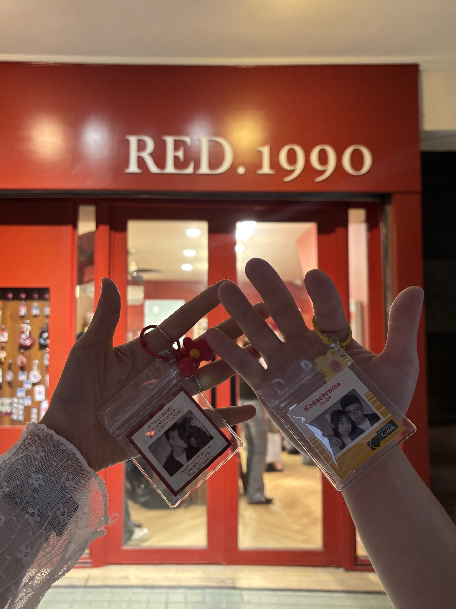

欸欸跟你說喔.....
我們在一起一個月了 🤎
☃️
8月31日 · 故事的開始
哈囉你好 那個..你最近應該有被我朋友和他同事騷擾xd
你可能覺得突然又莫名其妙😂
🐰 揮手 HI !!
☃️
9月 · 第一次見面 (滑雪)

真的有人會第一次見面約滑雪嗎？
感覺會很狼狽耶！
而且太緊張了吧！ 會不會很尷尬...
而且太緊張了吧！ 會不會很尷尬...
見面那天 我從早上就超級緊張😖
看到穿白色襯衫的你 心跳已經快到不行了
只能轉身深呼吸🤯
看到穿白色襯衫的你 心跳已經快到不行了
只能轉身深呼吸🤯
第一次見面完褲子忘在你那邊
就跟你說有機會見面再拿給我
沒機會的話可以寄給我🥹
其實我只是不知道會不會有下一次
但我是想見面的！
因為第一次見面很開心
意外發現你也喜歡火影 我們都喜歡 MOMO燒😻
就跟你說有機會見面再拿給我
沒機會的話可以寄給我🥹
其實我只是不知道會不會有下一次
但我是想見面的！
因為第一次見面很開心
意外發現你也喜歡火影 我們都喜歡 MOMO燒😻
而且...你真的很帥😳💓
可是!
你那時候沒回覆我鼓起勇氣說的: 我會想再見阿!!
現在給你機會上訴！🥲🥲
你那時候沒回覆我鼓起勇氣說的: 我會想再見阿!!
現在給你機會上訴！🥲🥲
☃️
第二次見面的約會
🐾 卡皮巴拉農場
我很怕被鴨鴨🦆啄 你就拉著我的手過去餵
那時候也有一點點覺得好幸福喔 好開心😚
但一樣很緊張
我很怕被鴨鴨🦆啄 你就拉著我的手過去餵
那時候也有一點點覺得好幸福喔 好開心😚
但一樣很緊張

🎡 美麗華摩天輪
這是我第一次坐美麗華的摩天輪🎡
我有懼高症所以蠻緊張的 但又覺得好浪漫💖
但我根本不敢跟你對視><
這是我第一次坐美麗華的摩天輪🎡
我有懼高症所以蠻緊張的 但又覺得好浪漫💖
但我根本不敢跟你對視><

心裡小加分 因為你居然有先買票！我很驚訝✨
👟 隔天運動與吃飯
隔天是各自運動完去吃飯
(其實我蠻喜歡這樣的😳)
你看我的手有沒有破皮 還說我手怎麼這麼冰
我已經緊張到不知道說什麼了 超級害羞💓
但又不知道你是不是只是很關心朋友的手😹
隔天是各自運動完去吃飯
(其實我蠻喜歡這樣的😳)
你看我的手有沒有破皮 還說我手怎麼這麼冰
我已經緊張到不知道說什麼了 超級害羞💓
但又不知道你是不是只是很關心朋友的手😹

🎬 後來的電影約會
愛你至死不渝真的是嚇鼠 而且今天進度小躍進xd
你餵我吃爆米花 後來還牽我的手！
而且是我第一次真的跟你講出 有喜歡
(雖然也是糾結了很久才說出口)
我其實很猶豫耶 但又想讓你知道我是真的有喜歡你🥺
雖然我根本不知道你怎麼想
但沒關係 我確定我有喜歡><
愛你至死不渝真的是嚇鼠 而且今天進度小躍進xd
你餵我吃爆米花 後來還牽我的手！

我已經不知道該緊張電影還是你牽我讓我心跳加速了💓而且是我第一次真的跟你講出 有喜歡
(雖然也是糾結了很久才說出口)
我其實很猶豫耶 但又想讓你知道我是真的有喜歡你🥺
雖然我根本不知道你怎麼想
但沒關係 我確定我有喜歡><
但看完電影就沒有牽手了 想說你應該只是對朋友很好、會保護女生
( 但不用太會保護其他女生沒關係！保護我就好!🤍 )
( 但不用太會保護其他女生沒關係！保護我就好!🤍 )
☃️
烘爐地 · 土地公的加持
「你要不要當我女朋友？」
這完全不算是告白！！！
而且覺得太速 我們甚至只見面幾次而已😳
根本不知道你喜歡我什麼
很怕你只是一頭熱🥺
也很怕你想得太美好 但實際上的我不是你想的那樣
雖然我應該也是乖乖的吧哈哈😉
雖然那根本不能算是告白 那為什麼會答應呢
我太喜歡你了!所以我也想試著跟你走下去看看
看我們可以走到哪裡👩🏻❤️👨🏻
而且覺得太速 我們甚至只見面幾次而已😳
根本不知道你喜歡我什麼
很怕你只是一頭熱🥺
也很怕你想得太美好 但實際上的我不是你想的那樣
雖然我應該也是乖乖的吧哈哈😉
雖然那根本不能算是告白 那為什麼會答應呢
我太喜歡你了!所以我也想試著跟你走下去看看
看我們可以走到哪裡👩🏻❤️👨🏻
這到底算不算告白？：
☃️
隔天 · 第二次滑雪
隔天我們去第二次滑雪
沒想到第一次跟第二次之間
身分就不同了👫🏻

在一起之後我們開始每天講電話 幾乎每週見面😍
我很喜歡跟你講話跟見面唷😚
完全不會有任何不方便不喜歡喔～
是你我都喜歡❤️
但因為我們省略了很多前面相處＆更認識對方的過程
所以我們一定有很多需要一起調整的地方
所以我們一定有很多需要一起調整的地方

總之第一個月很幸福的度過💖
應該是會繼續續約到一輩子吧??
應該是會繼續續約到一輩子吧??

☃️
劉先生要續約嗎？